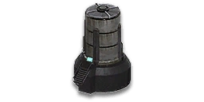

Router Drop
Router dropping describes the method of using multiple players carrying different construction modules being flown out via ESF or Valkyire to quickly build small construction outposts within the vicinity of facilities to be attacked.
It's main advantage lies in its speed, as the previous step of pulling ANTs to harvest cortium usually falls out.
Prerequisites
Having unlocked Logistics certifications I are required to conduct basic variations of the router drop.
Basic variant (Duo)
The easiest way to cover most key concepts regarding router dropping is to go over it's most basic variant including two players.
Aquiring modules
Construction modules can be aquired from cortium silo terminals or from deployed ANTs. The absolute minimum amount of modules required for aquiring a router are the routing spire as well as a nearby cortium silo to power it.
{kind=link}
Silo storage & reserved mode
Cortium silos feature an indicator for their amount of stored cortium. Should the amount of cortium drop below a certain threshold (less than 4 squares on the indicator), the silo will enter reseved mode and bar access to any player that isn't in a squad with the silos constructor!
{kind=link}
Construction menu navigation
The cortium silo can be found within the CORE tab. The routing spire is located under SPIRES. Click the star icon located within the yellow circle to favourite the modules, causing them to be listed in FAVOURITES.
{kind=link}
Global NDZ-Bug
Should you get a promt saying "you are in a no-deploy zone" despite being outside the red circles drawn within the minimap, you unfortunately have contracted the global no-deploy zone bug which requires you to restart the game before being able to place any construction modules.
{kind=link}
Sufficiently filled cortium silos are usually found at larger construction bases further away from the frontlines. A good tip would be to search for command centers within the map screen's spawn list.
Obviously spawns provided by rebirthing centers or elysium spawn tubes can also have well filled cortium silos nearby. Note that listed spawn entries feature small icons depicting which terminals are nearby for use:
{kind=link}
Aircraft terminal availability
It generally is recommended to source construction modules from bases which feature local aircraft terminals. That way aircraft can be pulled quickly at a discounted nanite cost in order to fly out the modules to the desired location.
Conducting the Router drop
The average procedure which plays out in most router drops is laid out in the flow chart below. For clarity's sake, follow along the tan colored path as it lays out a router drop procedure with no complications coming up.
Cells containing an information symbol ⓘ have annotations below proving further context.
graph TB
A(Locate Silo)
B{<b><span style="font-size:32px">ⓘ</span></b><br>Verify absence of global NDZ}
C[Grab Silo and Spire]
D[Restart the Game]
E[Fly to a 500m vicinity of facility to be attacked]
F{Too close to other deployables?}
G[Place Modules]
H(Spire player grabs and places router)
I[<b><span style="font-size:32px">ⓘ</span></b><br>Mark Silo with STO]
J[Find another drop location]
L[<b><span style="font-size:32px">ⓘ</span></b><br>Destroy enemy spire and replace it with your own <b>parasitic spire</b>]
A --> B
B -->|no bug present| C
C -->|for squad leads| I
B -->|NDZ-bug present| D
D --> B
C --> E
E --> F
F -->|Yes, allied base obstructing <b>OR</b> guarded enemy base| J
J --> G
F -->|Yes, unguarded enemy base obstructing| L
L --> G
F -->|no nearby deployables| G
G -->|Modules finished constructing?| H
classDef main fill:#ffe1a6,stroke:#000000;
class A,B,C,E,F,G,H main;
linkStyle 1 stroke:#000000,stroke-width:4px;
linkStyle 0 struoke:#000000,stroke-width:4px;
linkStyle 5 stroke:#000000,stroke-width:4px;
linkStyle 6 stroke:#000000,stroke-width:4px;
linkStyle 11 stroke:#000000,stroke-width:4px;
linkStyle 12 stroke:#000000,stroke-width:4px;Verifying global NDZ abscence
bruh
Squad Tactical Overlays (STO's)
nerd shit
Parasitic routing spires
how rude
Consecutive Drops
Functional construction modules such as silos and spires have adjacency limitations as well as being limited to one placed module per character.
| Iteration 1 | Iteration 2 | |
|---|---|---|
| Player 1 |
 Cortium Silo |
Routing Spire |
| Player 2 |
Routing Spire |
Cortium Silo |
{kind=link}
{kind=link}